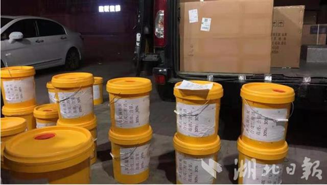
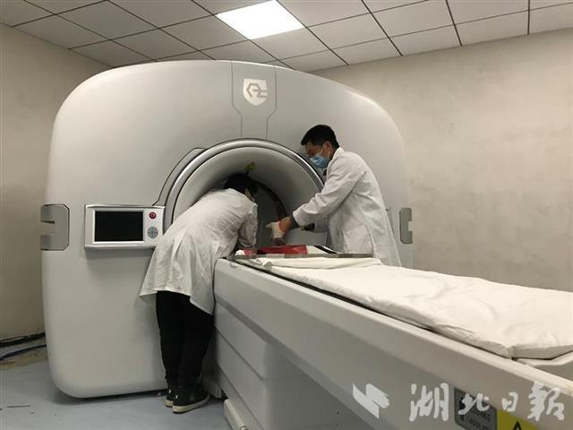
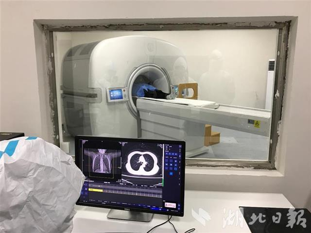
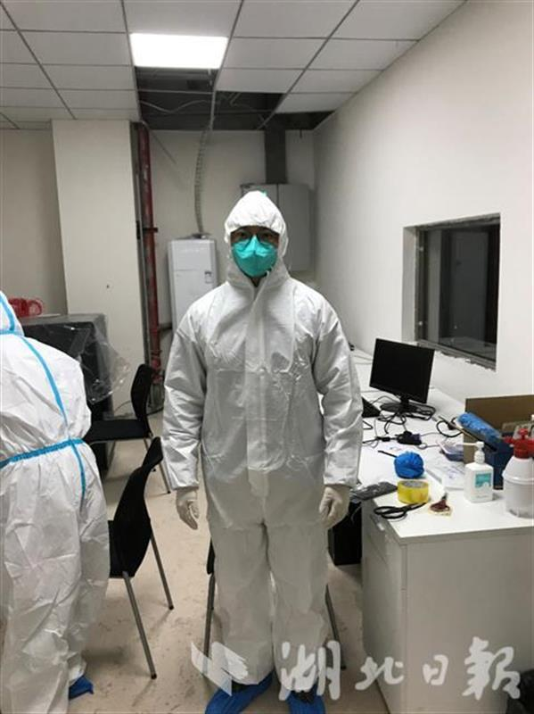

数字PET团队获2021年“湖北青年五四奖章”
在2021年“湖北青年五四奖章”表彰名单中，华中科技大学生命科学与技术学院数字PET援鄂医疗队入选，成为15个获奖集体之一。得知获奖，团队成员之一肖鹏说，“这对我们团队师生是一个莫大的肯定与激励。青年中国，吾辈当歌。正如我们实验室成立至今贯彻不变的口号：激情、勇气、理想、责任！我们希望培养兼有格局、能力和情操的小同伴，一同投身科技报国！”
数字PET援鄂医疗队是由华中科技大学生命科学与技术学院教授谢庆国带领的数字PET团队成员组成。2020年伊始，新冠病毒肆虐湖北，数字PET实验室团队成员火速组建“数字PET援鄂医疗队”，通过各种方式为武汉战疫出力。
肖鹏教授是生物医学工程领域方面的专家，他回忆，疫情发生后物资紧缺，他们在微信群上临时组成了一个不到20人的“抗疫援助”线上委员会，他利用自身资源，和同济医院一个朋友收集、分析本地医院需求，其他成员募集资金物品援助医院。
数字PET发明人、援鄂医疗队队长谢庆国教授当时滞留外地，他排除困难与国内外医学团队展开一轮轮讨论和合作，利用数字PET对新冠肺炎的发病机制和过程进行精准刻画。同时，针对PET/CT安装支援当地医院的工作，也迅速部署。

捐赠给医院的输液泵和消毒剂。
数字PET实验室博士生张博、房磊则直接冲到疫情第一线，用冲锋前线、向险而行的实际行动，诠释了属于青年人的新时代党员精神。当时，湖北中西医结合医院梁子湖分院被征用为抗疫定点医院，并向社会紧急征用CT设备进行病例监测。医院刚刚完成基建，各项设备设施不齐全。张博、房磊仅用短短48小时，便完成了一台全数字PET/CT的安装、调试与测试，于1月25日凌晨3点圆满完成交付。临时组成的“数字PET援鄂医疗队”还全天进驻医院，协助医生工作，奋战35天。
据了解，华中科技大学数字PET团队20年如一日潜心数字PET技术的研究，解决了高速脉冲精确数字化的国际难题，形成以“全数字”和“精确采样”为两大本质特点全新技术体系，解决了高端医疗器械技术领域的卡脖难题，研发的全球首台临床全数字PET/CT医疗器械，于2019年获批国家医疗器械注册证，于2020年6月在湖北省鄂州市中心医院投入试运行，至今，已凭借其“火眼金睛”为数百名患者提前“揪”出癌症病灶。



数字PET援鄂医疗队紧急支援鄂州医院。
在科研上不懈创新、勇攀高峰，数字PET团队更注重立德树人。谢庆国认为，“成人比成才更重要，成长比成功更重要。我们绝对不欢迎精致的利己主义者，立大志做大事、拥有高尚品格和宏大格局才是一流大学的人才培养目标。”
秉持着这样的育人理念，数字PET实验室尤其注重对学生社会责任感的培养。在一些重大事件面前，师生们都积极参与。从教近二十年的肖鹏说，“以爱国、进步、民主、科学为主要内容的五四精神，其核心是爱国主义精神。作为一线教育工作者，五四精神也给了我们在立德树人方面深刻的现实启示与深厚的精神滋养。”
（湖北日报全媒记者 方琳 通讯员 王潇潇）